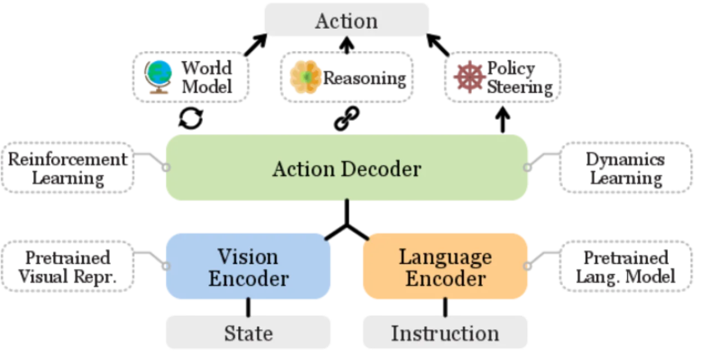
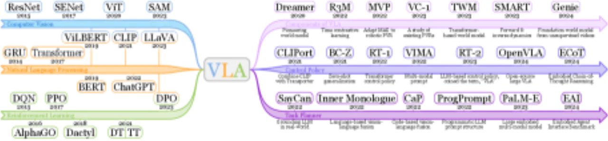
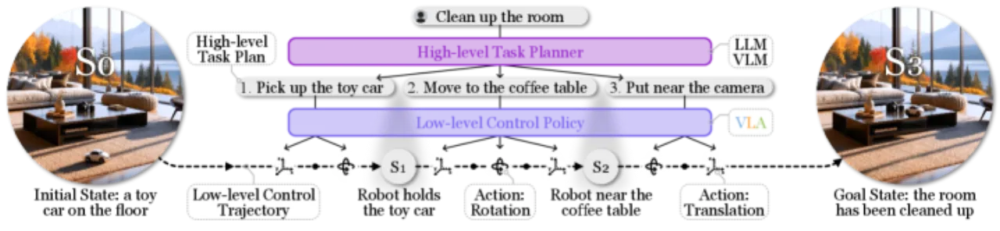
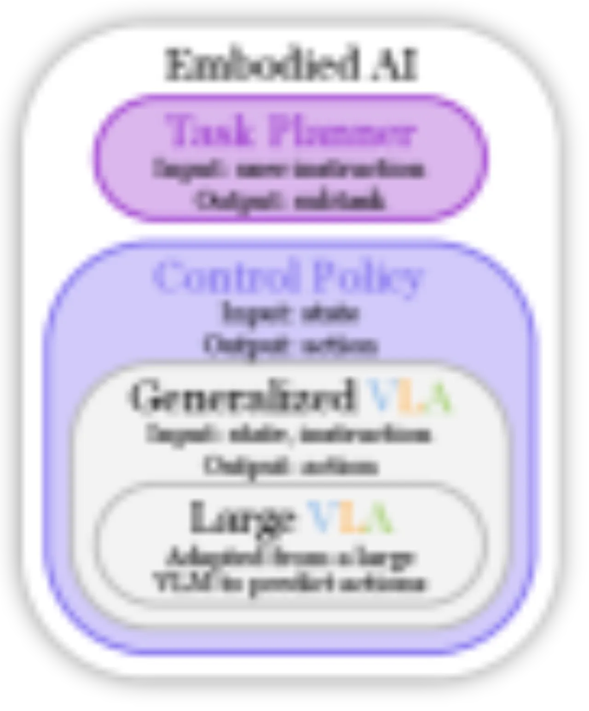

本文是首篇专门针对 Vision-Language-Action（VLA）模型的综合综述，系统梳理了从基础组件到完整 VLA 系统的设计空间，覆盖低层控制策略（Transformer、扩散模型、3D 视觉）与高层任务规划器（Monolithic / Modular），并总结了数据集、Benchmark 和未来挑战。
传统基于强化学习的机器人策略"largely focused on addressing a limited set of tasks within controlled environments"，难以泛化到真实复杂场景。随着大型语言模型（LLM）和视觉-语言模型（VLM）的崛起，将语言理解、视觉感知与机器人动作生成统一到同一模型的需求日益迫切——这正是 VLA 模型的核心出发点。
"Embodied AI is widely recognized as a cornerstone of artificial general intelligence (AGI)."


本综述提出一个层级化分类框架（hierarchical framework），将 VLA 系统分为三大研究方向：① VLA 组件（Components）、② 低层控制策略（Low-Level Control Policies）、③ 高层任务规划器（High-Level Task Planners）。低层策略负责执行具体的动作序列，高层规划器负责把复杂指令分解为可执行子任务。

Table I 系统对比了常用 PVR 方法，包括网络类型、预训练目标及适用机器人任务：
| 方法 | 网络类型 | 预训练目标 | 特点 |
|---|---|---|---|
| CLIP | ViT / ResNet | 对比学习（图文对齐） | 400M 图文对，泛化强 |
| R3M | ResNet-50 | 时序对比 + 语言对齐 | 专为机器人操作设计 |
| VC-1 | ViT-B | MAE + 像素重建 | 像素级细节更优 |
| DINOv2 | ViT | 自监督蒸馏 | 强空间特征，无标签 |
| Theia | ViT | 多任务综合 | 综合评测最优 |
将动作序列建模为 token 序列（如 RT-1 离散化为 256 bins/维度），利用 causal Transformer 做 next-token prediction。RT-2 进一步将动作 token 与语言 token 混合，直接从 VLM 输出动作。
以 Diffusion Policy 为代表，将动作生成建模为去噪过程（DDPM），能够建模多模态动作分布，避免均值回归问题。RDT-1B 扩展至 1.2B 参数并展示出 "zero-shot generalization"。

综述梳理了 50+ 低层控制策略（Table III）和数十种高层规划器（Table IV），并整合了主流数据集与 Benchmark。以下展示 RT 系列和大型 VLA 的关键里程碑，以及核心挑战。
| 方法 | 年份 | 核心创新 | 规模 |
|---|---|---|---|
| RT-1 | 2022 | 大规模多任务机器人 Transformer | ~35M 参数 |
| RT-2 | 2023 | 首次提出"VLA"，将 VLM 输出动作 token | 55B（PaLI-X） |
| RT-H | 2024 | 层级化动作 token（语言 → 子任务 → 动作） | – |
| RT-X / RT-2-X | 2023 | OXE 跨机器人数据集，"orders of magnitude larger" | 55B |
| 方法 | 参数量 | 特点 |
|---|---|---|
| OpenVLA | 7B | 开源 VLA，基于 LLaMA，支持微调 |
| π₀（pi zero） | ~22B | 流匹配（flow matching）动作生成 |
| RDT-1B | 1.2B | 扩散 Transformer，"zero-shot generalization" |
| RoboMamba | – | Mamba 架构，推理效率更高 |
| SpatialVLA | – | 空间感知增强 VLA |
综述在 Table V 整理了主流数据集，涵盖真实环境与仿真环境：
真实部署中的安全约束与 fail-safe 机制
数据稀缺、跨机器人一致性评测
跨域迁移、开放世界泛化
触觉、力觉、声音等多模态融合
复杂序列任务的分解与执行
LVLA 推理延迟在动态环境中的影响
多具身智能体协作与协调
伦理规范与社会影响评估
作者明确指出大型 VLA 的"slow inference speed can significantly impact performance in dynamic environments, as changes may occur during inference"，需要量化压缩、early-exit 等技术缓解。
离散化动作空间会导致"early grasping issues"，且对于"pouring water into a cup"等需要额外自由度的任务，SE(2) 动作离散化不足以描述真实操作需求。
机器人学习领域数据获取成本高，跨不同机器人形态的泛化仍是重大挑战。OXE 等跨机器人数据集是初步尝试，但与语言领域数据规模仍有量级差距。
VLA 领域发展极快（截至 v8，2026 年 5 月），综述所梳理的方法可能在出版后迅速过时。作者维护的 GitHub 仓库是持续更新的补充资源，但仍难以做到实时追踪。
综述以定性分类为主，缺少统一 Benchmark 上的定量对比表格（成功率、延迟等），使读者难以直接判断各方法的相对优劣。这在一定程度上降低了综述作为选型参考的实用性。